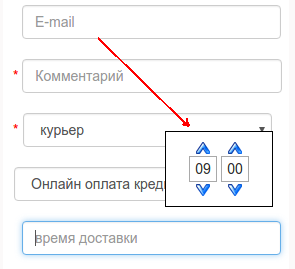

Об этой справке
Актуальную версию справки вы можете прочесть введя адрес /doc на вашем сайте магазина.
Часто задаваемые вопросы
Изменения верстки и изображений не применяются на сервере
Я залил мои css файлы и изображения на сервер, но они не доступны через браузер
Причина одна: после изменения старых и добавления новых файлов надо пройти по url /updateassets
Руководство верстальщика веб-приложения Веб-агрегатор магазинов
Общее описание веб-приложения Веб-агрегатор магазинов
Категории агрегатора
Приложение представляет собой агрегатор нескольких магазинов. Магазины объеденены в группы по категориям агрегатора. Категория агрегатора может не содержать магазинов, но может содержать вложенные категории.
Категории магазинов
Магазин в свою очередь может содержать категории товаров, при входе на страницу магазина отображаются товары первой непустой категории (то есть содержащей товары).
Добавив товары в корзину пользователь может перейти на страницу корзины (Для каждого магазина она своя) и оформить заказ.
Используемые технологии
Веб приложение использует на бекенде фреймверк laravel 5.2, чтобы успешно работать с ним вам надо ознакомиться с частью руководства фреймверка, касающейся blade шаблонизатора
Веб приложение на фронтенде включает в себя и использует некоторые возможности фреймверка Bootstrap v3.3.1.
Вы можете при верстке страниц использовать все возможности, предоставляемые этим фреймверком.
Структура предоставляемого вам каталога приложения
При работе вам будет предоставлен FTP доступ к файлам приложения, отвечающим за внешний вид приложения. Это файлы css, файлы изображений, шрифтов, вам также доступны для редактирования blade шаблоны.
Каталоги
На верхнем уровне три каталога:
assets
lang
views
Верстальщику придется работать в основном с assets и views. В папке lang содержатся файлы локализации приложения, если вы добавляете в верстку какой-то элемент, содержащий текст, которого нет в приложении, этот текст следует добавить в файл lang/ru/messages.php
//Например
'Order_Form' => 'Оформление покупки',
'Remove_from_cart' => 'Удалить',
а в шаблоне вывести его с помощью конструкции
{{ trans('messages.Order_form’) }}
Каталог views содержит файлы шаблонов, его структура и файлы шаблонов будут рассмотрены ниже. Здесь же отмечены несколько общих моментов, прочитайте их внимательно.
Основной “скелет” html страницы содержится в папке layouts/master.blade.php. Подключаемые в нем части можно спокойно перемещать при необходимости, это не должно привести к нарушению работы приложения.
В файлах шаблонов, размещенных непосредственно в папке views вы можете перемещать при необходимости блоки в тегах section и article, это не должно привести к нарушению работы приложения.
Во всех прочих файлах шаблонах вы можете редактировать отображение с помощью css: ширину, высоту, цвет, шрифты, фоновые изображения, смещения влево или вправо, отступы но при этом изменять или удалять css селекторы в значении аттрибутов class и id, имена html тегов, data-аттрибуты, структуру html верстки шаблонов в папках widgets и partials нельзя - это приведет к потере работоспособности javascript части приложения. Некоторые части приложения уже сейчас работают как SPA приложение, в конце концов все приложение будет работать как одностраничное. Можно спокойно удалять следующие селекторы, но только их: pull-left, pull-right, clearfix, text-center, text-right, text-left.
При правке шаблона рекомендуем сохранять оригинальную копию шаблона - так вы всегда сможете посмотреть, какие переменные доступны в шаблоне и как их правильно вывести на страницу.
При редактировании верстки следует иметь ввиду, что цветовая схема сайта отчасти настраиваается из личного кабинета. Изучите файл color.css, прочтите комментарии в нем. Перечисленные в нем селекторы должны отвечать за те же элементы сайта что и сейчас. Если вы конечно хотите сохранить возможность настройки цветов сайта из личного кабинета. Имейте ввиду, что редактировать файл color.css не имеет смысла, он пересоздастся автоматически при сохранении настроек в личном кабинете.
Каталог assets содержит файлы css, изображения, шрифты. Также вы можете добавлять туда свои пользовательские javascript файлы, но их имена не должны совпадать с перечислленными ниже в соответствующем разделе.
Каталог views
Ниже даны описания файлов и каталогов в каталоге views.
Каталог errors - в этом каталоге вы можете создавать оформленные сообщения об ошибках на сервере приложения, имя файла должно совпадать с кодом http статуса ошибки, например 404.blade.php, 503.blade.php.
Каталог layouts - здесь вы можете изменить или создать свой файл мастер - шаблона приложения. Описание переменных, доступных в файле не будет дано, так как все они передаются в подключаемый в этом мастер шаблоне шаблоны. Изучив оригинальные шаблоны вы можете понять, какие переменные что содержат, сохранив оригинальные шаблоны вы всегда можете видеть доступные в шаблоне переменные.
Каталог partials - здесь содержатся файлы, в которых содержится верстка частей той или иной страницы приложения. Часто, но необязательно файл в partials может содержать многократно повторяющийся элемент верстки, например блок описания продукта магазина в файле product_item.blade.php, блок верстки особенности магазина в shopoption.blade.php и т. п.
Каталог vendor - стандартный каталог фреймверка laravel на него можно не обращать внимания, удалять не рекомендуется.
Каталог widgets - почти то же что и partials, но используется в основном для небольших, логически законченных блоков, например форма фильтрации ресторанов по кухням, форма оформления заказа, форма поиска.
Файл all_shops.blade.php
Это шаблон вывода всех магазинов агрегатора. Переменные, используемые в файле аналогичны используемым в shops.blade.php
Файл card_payment_fail.blade.php
Этот шаблон показывается при неуспешной оплате картами. Содержит javascript перенаправляющий пользователя обратно в корзину компании, заказ которой не удалось оплатить. Если данных для перенаправления недостаточно выводит сообщение об этом и перенаправляет на главную.
Файл card_payment_success.blade.php
Этот шаблон показывается при успешной оплате картами. Содержит javascript запускающий другой javascript (добавленный Компанией в Личном кабинете (это обычно учет статистики) ), очищающий корзину пользователя, перенаправляющий пользователя на страницу истории заказов.
Файл cart.blade.php
Это представление данных об отложенных пользователем товарах. В шаблоне доступна коллекция $products, каждый элемент коллекции имеет в своем составе поля:
photos - набор изображений продукта, описание элемента набора ниже
name - имя продукта
id - идентификатор продукта.
price - стоимость продукта
currency валюта, в которой указана стоимость продукта. Обратите внимание, для корректной работы приложения надо выводить как
{{ $currencies[$item->currency] }}
Описание $photos Каждый элемент массива $photos имеет поле:
thumbnail_url, big_url, preview_url, это ссылки на одно и тоже изображение в разных масштабах.
Обратите внимание, как сделана проверка на существование поля в оригинальном шаблоне
@if (isset($item->photos[0]->thumbnail_url))
<img class="img-responsive project-image" src="{{ $item->photos[0]->thumbnail_url }}">
@else
<img src="/img/productListNoImage.png" class="img-responsive project-image">
@endif
Делать такую проверку обязательно, так как никто не может вам гарантировать, что менеджер магазина не забыл загрузить все данные.
Файл facebook_login_redirect.blade.php
Этот view используется, когда пользователь авторизуется через facebook. В него можно добавить сообщение, например "Подождите, сейчас вы будете перемещены".
Файл favorites_shops.blade.php
Этот view используется, когда пользователь в мобильной версии нажимает на ссылку "Избранное". Это список избранных магазинов или ресторанов пользователя.
Файл index.blade.php
Представление данных на стартовой странице магазина. В оригинальном шаблоне включает в себя только представление данных категорий агрегатора.
Если в настройках приложения включена галочка "Показывать на главной странице категории первой компании (имеет смысл при наличии только одной компании)", то вместо этого файла включается singlecompany.blade.php
Файл mru_login_redirect.blade.php
Этот view используется, когда пользователь авторизуется через MailRu. В него можно добавить сообщение, например "Подождите, сейчас вы будете перемещены". Удалять существующий код
@extends('layouts.master')
@if((isset($successMruLogin) && $successMruLogin) || !$errorMessage)
<script type="text/javascript">window.mruLoginSuccess=true;</script>
@endif
не надо
Файл recovery_password_message.blade.php
Файл recovery_password_message.blade.php используется при восстановлении пароля, в случае неудачи. Сообщение об ошибке выводится в мастер шаблоне, однако наличие этого view обеспечивает более широкий простор для творчества.
Файл singlecompany.blade.php
Если в настройках приложения установлена включена опция "Показывать на главной странице категории первой компании (имеет смысл при наличии только одной компании)", этот файл подключается вместо index.blade.php
Файл vk_login_redirect.blade.php
Этот view используется, когда пользователь авторизуется через vkontakte. В него можно добавить сообщение, например "Подождите, сейчас вы будете перемещены". Удалять существующий код
@extends('layouts.master')
@if((isset($successVkLogin) && $successVkLogin) || !$errorMessage)
<script type="text/javascript">window.vkLoginSuccess=true;</script>
@endif
не надо
Файл shop.blade.php
Представление данных на странице определенной категории магазина. Подключает в себя из partials блоки списка продуктов, новостей, информации.
Доступные переменные большого значения не имеют: в этом файле вы можете при необходимости изменить порядок включаемых блоков, возможно добавить какие-то новые. Смысл этого файла - избежание нагромождения в одном шаблоне верстки списка товаров, новостей и информации магазина, файл просто разбивает их по частям для более удобной работы с ними.
Файл favorite_main_page.blade.php
Файл предназначен для вывода избранного магазина или ресторана на главной странице сайта в разделе "Избранные магазины".
Доступна переменная shop с полями:
cat_id - идентификатор категории агрегатора магазинов, служит для формирования ссылки на страницу магазина или ресторана
id - идентификатор категории, служит для формирования ссылки на страницу магазина или ресторана
logotype_thumbnail - лого магазина или ресторана
company_name - Наименование магазина или ресторана
Файл partials/javascript.blade.php
Файл содержит секцию подключаемых скриптов
<script src="foo.js"></script>
<script src="bar.js"></script>
Секция подключаемых javascript файлов вынесена в отдельный файл с целью удобно подключать её в различных layout файлах (мастер-шаблонах).
Для подключения специфичных для страницы скриптов во всех шаблонах кроме тех, которые лежат в папке layout надо использовать
@section('js')
@parent
<script src="your_required_script.js"></script>
@stop
Если добавить такой код напримерв файле views/index.blade.php, то на главной странице сайта будут подключены все скрипты подключенные в файле partials/javascript.blade.php и файл your_required_script.js.
Файл shopcategories.blade.php
Почти то же самое, что и предыдущий файл, но это страница магазина без указания какой-либо конкретной категории магазина, то есть этот шаблон работает когда посетитель заходит на страницу магазина.
По сравнению с шаблоном категории в нем также присутствует подключение файла partials.shopcategories.php
В существубщем сейчас по умолчанию фронтенде приложения этот блок показывается только на устройствах с размером экрана не более 767 пикселей по горизонтали.
Для более широких форматов этот список категорий магазина не показывается, его аналог доступен в левой колонке.
Примечание: мобильная версия веб-приложения в настоящее время дорабатывается.
Важно при редактировании: не потерять элемент
, он важен для скриптов фронтенда.
<input type=“hidden” id=“shopAllCategories” value=“1”>
Файл shops.blade.php
Представление данных в категории агрегатора, не содержащей вложенных категорий агрегатора, но содержащей магазины. Другими словами, это шаблон страницы, выводящей список магазинов. Эта страница может в некоторых (в перспективе во всех) случаях работать как одностраничное приложение, поэтому здесь есть некоторые нююансы.
После подключения шаблона partials.categories для вывода вложенных категорий агрегатора следует блок section id=“shops”.
При редактировании важно не потерять элемент
<div class="hidden">{{ $data }}</div><input type="hidden" id="perPage" value="{{ $perPage }}">
В нем содержатся json данные, которые использует javascript страницы, без него работать не будет.
Данные о магазинах содержатся в коллекции $shops, описание элемента коллекции будет ниже.
Сейчас обратитие внимание вот на что: Шаблон блока магазина дублирован дважды. Один перед строчкой
@foreach ($shops as $shop), второй после нее.
Это необходимо для javascript страницы. Прочтите внимательно этот раздел, я буду на него ссылаться при описании других шаблонов, используемых javascript частью приложения.
Конечно, очень неудобно редактировать по сути один и тот же элемент дважды, но альтернативы этому пока в разработке веб страниц нет.
Перед строчкой @foreach ($shops as $shop) в теге article находится шаблон блока магазина для javascript.
После строчки @foreach ($shops as $shop) в теге article находится шаблон блока магазина, обрабатываемый на сервере.
Те переменные, которые в blade шаблоне доступны как поля $shop (например {{ $shop->company_name }}) в javaScript шаблоне задаются как макрос [ИМЯ_ПОЛЯ].
То есть, если в шаблоне blade у нас {{ $shop->company_name }}, в javascript шаблоне как правило (но не обязательно!) будет [companyName]. Особый случай составляет атрибут src тега img. Для него используется макрос в виде data-атрибута data-src=“src”. Javascript заменит этот атрибут на src=“ПУТЬКИЗОБРАЖЕНИЮ”. Подобный атрибут может и вероятно будет использоваться в других шаблонах для атрибута href тега a, но пока таких нет.
Также важно запомнить: При редактировании css файлов стилей css селектор .tpl в ПРИЛОЖЕНИЕ ДОЛЖЕН иметь свойство display:none.
Здесь вероятно будет описание полей элемента коллекции $shops, но пока я считаю его излишним, просто сохраните копию оригинального файла и смотрите как выводятся те или иные свойства магазина в нем.
Файл shop_search.blade.php
Результаты текстового поиска в магазине. В целом аналогично шаблонам shopcategories.blade.php и shop.blade.php Пока отсутствуют блоки Новостей и Информации, дорабатывается.
Файл history_shop.blade.php
Это шаблон истории заказов. Как и во всех остальных шаблонах при правке важно сохранить структуру тегов, не потерять атрибуты id, значения атрибутов class и data-attributes.
Файл welcome.blade.php
Просто пример blade шаблона от laravel.
Файл каталога layout
Там сейчас один файл, вы можете исползовать его или создать свой мастер шаблон (“скелет” html страницы) и использовать его в шаблонах используя инструкцию @extends('layouts.ВАШ_МАСТЕР_ШАБЛОН’) Вы можете располагать подключаемые с помощью @include или реализуемые с помощью @section части страницы как вам надо, но надо помнить одно: Все передаваемые в @include переменные нужны, терять их нельзя. Описывать их (переменные) здесь нет смысла, так как они будут при необходимости описаны в описаниях подключаемых шаблонов.
Также хочется обратить внимание на секции подключения css и javascript файлов. Не надо отключать файлы потому что их нет в предоставленной вам папке js, они есть в другой папке, в которую копируются ваши файлы из каталога assets. Что касается css, там все проще, не надо отключать лишь файл dev.css и возможно timepicker.css про timepicker подробнее написано в секции order_form.blade.php
.Файлы и каталоги каталога partials
bread_crumbs.blade.php
Представление данных навигационной панели. Это шаблон хлебных крошек, кнопки “Вход”, иконки корзины (которая может отображаться), тоглер разворачивающий хлебные крошки для мобильной версии. Помимо хлебных крошек писать особенно не о чем, но помните что нельзя изменять значения аттрибутов id и class и удалять data атрибуты.
ul id=“breadcrumbs” содержит шаблоны для хлебных крошек, для серверного и javascript кода приложения.
Если вы не читали описание шаблона shops.blade.php прочтите его, он содержит наиболее подробное описание работы с javascript шаблонами в этом приложении.
В отличии от него, в выводе хлебных крошек для javascript шаблона используется несколько тегов с селектором tpl. Один для хлебной крошки - ссылки, один для разделителя крошек и один для заключительной хлебной крошки В остальном все аналогично выводу в shops.blade.php: в шаблоне, обрабатываемом на сервере используются переменные вида {{ $breadCrumbs[$i]['title’] }}, в шаблоне обрабатываемом javascript переменные вида [TITLE]
categories.blade.php
Представление данных категорий агрегатора. Подключается на главной странице и на странице списка магазинов агрегатора. Важно не потерять при редактировании.
<div id="scopesData" class="hide">{{$categoriesTree}}</div>
<div id="firstBreadCrumbTitle" class="hide">{{ trans('messages.Main_bread_crumb') }}</div>
Данные категорий агрегатора доступны в коллекции $categories. Верстка шаблона блока представления категории дублируется, для javascript и для серверной части до и после строки @foreach ($categories as $category)
При редактировании надо править оба фрагмента, немного подробнее см. описание шаблона shops.blade.php
Для серверного шаблона переменные задаются в {{ $category->var_name }} для javascript шаблона [varName].
Сохраните оригинальный шаблон, чтобы иметь список доступных переменных перед глазами.
error_info.blade.php
Представление сообщения об ошибке. Доступна переменная $errorMessage содержащая текст ошибки. В оригинальном шаблоне используется также переменная $remoteErrorInfo, но она не будет определена в product версии приложения, на нее можно не обращать внимания.
news.blade.php
Представление списка новостей магазина. Доступные переменные смотрите в оригинальном шаблоне.
one_company_categories.blade.php
Представление категорий магазина на главной странице вместо категорий агрегатора. Файл используется, если в личном кабинете установлена опция "Показывать на главной странице категории первой компании (имеет смысл при наличии только одной компании)". Доступные переменные смотрите в оригинальном шаблоне.
pagination.blade.php
Представление постраничной навигации. Перед строкой @foreach ($pagination as $i) находятся javascript шаблон для активного и неактивного элемента списка страниц. При редактировании важно сохранять структуру и имена классов. Подробнее про javascript шаблоны shops.blade.php
product_item.blade.php
Представление элемента списка товаров магазина. Доступные переменные можно видеть в оригинальном шаблоне. Данный шаблон дублируется в папке js, при изменении верстки надо редактировать оба шаблона. Для сохранения работоспособности важно сохранить структуру верстки, значения атрибутов class и id, data-аттрибуты.
products.blade.php
Представление списка товаров магазина. Выводит сообщение $message, если оно определено, подключает javascript шаблон элемента списка товаров магазина @include('partials.js.product_item’) , подключает в цикле шаблон элемента списка товаров магазина @include('partials.product_item’) , подключает шаблон постраничной навигации.
set_address_dialog.blade.php
Всплывающее окно для выбора местоположения пользователя на гугл картах.
product_item.blade.php
Представление элемента списка товаров магазина. Доступные переменные можно видеть в оригинальном шаблоне. Данный шаблон дублируется в папке js, при изменении верстки надо редактировать оба шаблона. Для сохранения работоспособности важно сохранить структуру верстки, значения атрибутов class и id, data-аттрибуты.
shopcategorieschild.blade.php
Это категории магазина вложенные в категорию магазина в правой колонке. Этот файл используется описаным выше shopcategories.blade.php
shopcategorieschildleft.blade.php
Это категории магазина вложенные в категорию магазина в левой колонке. Файл этого шаблона подключается шаблоном widgets/shop_categories.blade.php, который показывается на устройствах с горизонталью экрана выше 767 пикселей.
shopfeatures.blade.php
Шаблон списка “особенностей” магазина. Например, бесплатная доставка или стоимость доставки или минимальная величина заказа. Помимо видимых в оригинальном шаблоне переменных доступна также $feature['icon’] которая может принимать значения
'sprite-ico-stack’, (принимает это значение при особенности “Минимальная величина заказа”).
'sprite-ico-rocket-w’, (принимает это значение при особенности “Стоимость доставки”)
'sprite sprite-ico-timer-2’ (принимает это значение при особенностях “Время работы”, “Время доставки”)
Вы можете использовать эти значения, чтобы добавить фоновое изображение (создав его и определив соответствующий css класс.) или еще как-то выделить соответствующую особенность.
shop_info.blade.php
Шаблон вывода информации о магазине. Используемые переменные смотрите в оригинальном щаблоне. При редактировании важно не потерять
<div id="ymdata" class="hide">{{ json_encode($addresses) }}</div>
<div id="yamap" style="width: 600px; height: 400px"></div>
shoplistfeatures.blade
Технический шаблон, его существование вызвано оптимизацией призводителности приложения. Не удалять и не редактировать. Он подключается в shops.blade.php и подключает в свою очередь shopfeatures.blade.php.
shopoption.blade.php
Почти то же самое, что и shoplistfeatures.blade но подключается в top_block_shop_info.blade.php Элементы верстки редактировать можно, подключение partials.shopfeatures необходимо оставить (Допускается заменить на @section … @stop но зачем вам это?).
top_block_shop_info.blade.php
Шапка магазина на странице просмотра магазина и страницах его категорий.
Файл partials/order-shop-item-image.blade.php
Это шаблон изображения товара в истории заказа. Как и во всех остальных шаблонах при правке важно сохранить структуру тегов, не потерять атрибуты id, значения атрибутов class и data-attributes.
Файл partials/order_item.blade.php
Это шаблон списка товаров в истории заказа. Как и во всех остальных шаблонах при правке важно сохранить структуру тегов, не потерять атрибуты id, значения атрибутов class и data-attributes. Для javascript шаблон дублируется в папке js, править надо оба шаблона.
Файл partials/order_shop_item.blade.php
Это шаблон товара в истории заказа. Как и во всех остальных шаблонах при правке важно сохранить структуру тегов, не потерять атрибуты id, значения атрибутов class и data-attributes. Для javascript шаблон дублируется в папке js, править надо оба шаблона.
Файл partials/order_shop_mobile_item.blade.php
Это шаблон товара в истории заказа версии сайта для мобильных устройств. Как и во всех остальных шаблонах при правке важно сохранить структуру тегов, не потерять атрибуты id, значения атрибутов class и data-attributes.
top_menu.blade.php
Шапка сайта. Логотип агрегатора, слоган, телефон.
Каталог partials/js
В этом каталоге лежат дубли верстки из partials, но переменные blade {{ $varname->field }} в них заменены на [field]. Работать с ними надо внимательно, так как не всегда структура верстки блока для js повторяет структуру блока для php (некоторые повторяющиеся части блока могут быть вынесены в отдельные шаблоны).
То же касается и иимен пременных.
Файл js/favorite_main_page.blade.php
Не содержит переменных.
Этим блоком дополняется пустое место в блоке «Избранные магазины» на главной странице.
Файл js/javascript_init_javascript_variables.blade.php
В файле происходит инициализация полей объекта javascript Flipcat. Таким образом происходит передача данных о настройках копии приложения.
Файл не рекомендуется править. По умолчанию подключается в javascript.blade.php
Каталог и файлы каталога widgets
Виджеты в отличии от partials содержат всегда верстку логически законченных элементов, таких как формы. Все виджеты обычно очень сильно завязаны на javascript поэтому крайне важно не нарушать структуру верстки, не удалять и не менять значения атрибутов class и id, не удалять и не менять значения data-атрибутов
cuisine.blade.php
Представление формы фильтра ресторанов по кухням этих ресторанов. Когда пользователь заходит в категорию агрегатора, содержащую только рестораны, в левой колонке отображается этот виджет. Фильтрация происходит в браузере посредством javascript поэтому крайне важно не нарушать структуру верстки, не удалять и не менять значения атрибутов class и id, не удалять и не менять значения data-атрибутов
favorites.blade.php
Представление списка избранных магазинов пользователя.
geo_location_form_custom_city.blade.php
Форма выбора местоположения пользователя - посетителя сайта при отсутствии выбора категорий-городов из списка (Владелец группы магазинов (агрегатора магазинов) может задавать в настройках показ первой категории дерева категорий агрегаторов как список городов).
Файл mobile_menu.blade.php
ВЫдвигающееся слева меню в мобильной версии сайта.
order_form.blade.php
Представление формы заказа магазина. Так как магазинов в агрегаторе несколько и у каждого из них свои правила оформления заказа в этом шаблоне сравнительно сложная логика. Рассмотрим его построчно. Данные полей ввода доступны в переменной $orderTemplate. В цикле @foreach($orderTemplate as $field) эти поля выводятся.
В строке @if (isset($field->required) && $field->required == true) проверяется, обязательно ли покупатель должен заполнять это поле, если да, выводится метка обязательного заполнения <span class=“red”>*</span>
Далее в строке
@if ($field->type == 'text’ || $field->type == 'date’|| $field->type == 'time’ || $field->type == 'email’)
проверяется, тип поля это текст, дата, время или адрес электронной почты.
Если это один из них, выводится строка
<input @if($field->type == 'time’) maxlength=“5” @endif class=“form-control @if($field->type == 'time’) timepicker @endif @if (!isset($field->required) || $field->required != true) order-no-req @endif” @if($field->type != 'time’) type=“{{ $field->type }}” @else type=“text” @endif name=“{{ $field->id }}” id=“ofi{{ $field->id }}” placeholder=“{{ $field->title }}”>
В ней как можно заметить также происходит рад проверок. @if($field->type == 'time’) maxlength=“5” @endif добавляет атрибут maxlength=“5” если тип поля ввода time, то есть оно предназначено для ввода времени.
@if($field->type == 'time’) timepicker @endif
добавляет в значение атрибута class селектор timepicker.
Этот атрибут подключает к полю ввода виджет ввода времени, показаный на рисунке

Для успешной работы timepicker в мастер шаблоне должны быть подключены одноименные css и js файлы. В оригинальном оформлении сайта они естественно подключены.
@if (!isset($field->required) || $field->required != true) order-no-req @endif
добавляет в значение атрибута class селектор order-no-req. Это может быть полезно при стилизации полей ввода, так как блок содержащий поле с меткой обязательного заполнения может отличаться по размеру от блока содержащего поле без метки обязательного заполнения.
Фрагмент
@if($field->type != 'time’) type=“{{ $field->type }}” @else type=“text” @endif
устанавливает тип поля ввода в text если требуется time так как поддержка значения атрибута type=“time” не кроссбраузерна, да и стандартная реализация в браузерах, поддерживающих time показалась нам не самой удачной. Если вы не хотите использовать timepicker, можете удалить этот фрагмент.
Будьте внимательны с атрибутами id и name, они болжны быть такими же как в оригинальном шаблоне для нормальной работы формы.
В строке @elseif (($field->type == 'list’ || $field->type == 'price’) && isset($field->params) ) проверяется, не нужено ли вывести данные в виде выпадающего списка. Цикл
@foreach ($field->params as $param)
<option @if($field->type == 'price') data-price="{{ $param->value }}" @endif >{{ $param->name }}</option>
@endforeach
выводит элементы выпадающего списка.
Фрагмент @if($field->type == 'price’) data-price=“{{ $param->value }}” @endif обязательный Он добавляет атрибут data-price. Он необходим в том случае, если выбранная опция должна влиять на конечную стоимость товара.
Строка @elseif ($field->type == 'delimiter’) служит для определения горизонтального разделителя полей. В оригинальном шаблоне в качестве разделителся используется тег hr.
Блок
@else
<input class="form-control @if (!isset($field->required) || $field->required != true) order-no-req @endif" type="text" name="{{ $field->id }}" id="ofi{{ $field->id }}" placeholder="{{ $field->title }}">
@endif
служит для вывода поля ввода, для которого в html нет предусмотренных типов. Фрагмент логики @if (!isset($field->required) || $field->required != true) order-no-req @endif аналогичен описаному выше при описании фрагмента, в котором проверяется, тип поля это текст, дата, время или адрес электронной почты.
Фрагмент верстки
<div>
<span class="field-error"></span>
</div>
важен, так как в нем выводятся ошибки при заполнении полей.
При редактировании шаблона формы важно не потерять
<input type="hidden" name="_token" id="_token" value="<?php echo csrf_token(); ?>">
popup_auth.blade.php
Шаблон формы авторизации (всплывающее окно)
popup_city_select.blade.php
всплывающий виджет выбора города для мобильной версии
popup_passw_recovery.blade.php
Шаблон формы восстановления пароля (всплывающее окно)
popup_register.blade.php
Шаблон формы регистрации (всплывающее окно)
rfi_card_payment.blade.php
Форма оплаты картами (всплывающее окно)
Этот код сгенерирован РФИ банком. Удалять css селекторы нельзя КАТЕГОРИЧЕСКИ.
search_in_shop.blade.php
Шаблон формы поиска в магазине
set_location_form.blade.php
Форма, часть формы выбора локации. Может использоваться совместно со списком категорий-городов или с текстовым инпутом указания города.
shop_categories.blade.php Категории магазина в левой колонке
Шаблон категорий магазина в левой колонке.
Каталог widgets/partials
Файл favorite.blade.php Элемент списка избранных магазинов.
Данный шаблон дублируется в папке js для работы javascript сайта. Редактировать надо оба шаблона. Подробнее о javascript шаблонах читайте в шаблона shops.blade.php
Каталог assets
После редактирования файлов в этом каталоге (и вложенных каталогах) перейдите по ссылке /updateassets
css
Вы можете как угодно редактировать определения css селекторов в файлах этого каталога, удалять и создавать новые файлы. Удалять существующие селекторы как из css файлов так и из файлов шаблонов нельзя.
Добавлять новые селекторы и файлы можно. Ограничение на имя файла только одно: он не должен называться color.css или dev.css. Если вы создадите или отредактируете файл с таким называнием, он будет применен лишь до тех пор, пока в Личном кабинете не будут сохранены настройки внешнего вида.
При изменении верстки шаблонов всегда стоит иметь ввиду содержимое файла color.css - определенные в нем селекторы должны отвечать за те же элементы, что и в оригинальном шаблоне иначе настройка внешнего вида сайта из личного кабинета станет невозможной.
Редактировать файл color.css не имеет смысла, он автоматически перезапишется.
Редактировать файл dev.css не имеет смысла, он не будет опубликован.
js
Сайт использует несколько javascript файлов, подключенных в файле шаблона views/layouts/master.blade.php Вы не можете их редактировать. Но при необходимости вы можете создать дополнительные файлы, подключить их в шаблоне. Имена файлов при этом не должны быть app.js, bootstrap.min.js, breadcrumbs.js, custom.js, desktop.js, favorites.js, jquery.cookie.js, jquery-1.11.0.min.js, lib.js, marker.js, php.js, productsspa.js, shopcategoriesfilter.js, shopfilter.js, shoplist.js, sidebar.js, sidebar.js, slider.js, timepicker.js, wow.min.js, yamap.js, bootstrap-slider.min.js, googlemapdialogadapter.js, address.js, user.js
Каталоги img и fonts
Тут полный простор для творчества, редактируйте, создавайте, удаляйте.
Установка тайтла на страницах
По умолчанию в качестве тайтла страницы используется крайняя правая хлебная крошка. Если крошка не установлена (например, на главной странице), по умолчанию выводится имя агрегатора. (Имя агрегатора сейчас устанавливается в конфиге, позже будет вынесено в настройки в личном кабинете.).
<title<@section('title')
@if(isset($breadCrumbs) && is_array($breadCrumbs) && isset($breadCrumbs[count($breadCrumbs) - 1]))
{{ $breadCrumbs[count($breadCrumbs) - 1]['title'] }}
@else
{{ Config::get('app.shop_name', '') }}
@endif
@show</title>
В этом коде в ветке @else вы можете указать другой текст на случай, если хлебная крошка не задана. Также, вы можете добавить какой-то текст, который будет выводиться рядом с хлебной крошкой. Например:
<title<@section('title')
@if(isset($breadCrumbs) && is_array($breadCrumbs) && isset($breadCrumbs[count($breadCrumbs) - 1]))
Холодильники, морозильники, стиральные машины - MyShop - {{ $breadCrumbs[count($breadCrumbs) - 1]['title'] }}
@else
Тайтл, если нет хлебной крошки.
@endif
@show</title>
Также можно задать отдельный вывод хлебной крошки для каждого раздела сайта.
Делается это в файлах, которые лежат на первом уровне каталога views.
Какому разделу какой файл соответствует, можно найти в этой справке.
Например, если мы хотим задать тайтл для главной страницы сайта, пишем в index.blade.php
@section('title')
Тайтл для главной страницы сайта
@stop
Например, если мы хотим задать тайтл длястраницы корзины, пишем в cart.blade.php
@section('title')
Тайтл для корзины
@stop
Создание инфо страниц
Для добавления информационной страницы вы можете пройти по ссылке в личном кабинете "Информационные страницы" и добавить контент новой страницы.
Обратите внимание на поле ЧПУ в форме создания / редактирования страниц: контент страницы станет доступен на сайте приложения по ссылке /info/СОДЕРЖИМОЕ_ПОЛЯ_ЧПУ.
Если необходимо изменить верстку, шаблон страницы доступен в файле views/infopage/page.blade.php
Если необходимо изменить верстку, шаблон страницы доступен в файле views/infopage/page.blade.php
@extends('layouts.master')@extends('layouts.master')
@section('title'){{ $title }}@stop
@section('list')
<section class=" padding-top-bottom">
<div class="container desk-pad-top">
<h2 class="-item_title">{{ $heading }}</h2>
<article>{!! $body !!}</article>
</div>
</section>
@stopЕсли шаблон layouts.master покажется неподходящим для ваших целей, вы можете заменить его любым другим по своему усмотрению, определив в нем какую-то секцию, которую вы потом можете использовать в файле статьи. Подробнее смотрите документацию laravel
Также существует возможность создавать информационные страницы описаным ниже способом, эта возможность оставлена для людей, которым удобнее работать непосредственно с файлами разметки.
Для добавления своей страницы с тектом вам надо разместить её шаблон в каталоге views/articles. Например, если страница должна открываться по ссылке /articles/koni_i_ludi вам надо создать файл articles/koni_i_ludi.blade.php и записать в него содержимое:
@extends('layouts.master')
@section('title')Тайтл для страницы@stop
@section('list')
<section class=" padding-top-bottom">
<div class="container desk-pad-top">
<h2 class="-item_title">О конях</h2>
<article>
<p>
У кого какие есть? Можно и народное творчество, но лучше бы с автором. Вот у меня парочка:</p><p>
"Терпеть не могу лошадей: посередине они неудобны, а по краям опасны." (с) Уинстон Черчилль</p><p>
"Я… машин не люблю. Понимаешь, мне неинтересно. Лучше бы я себе завёл лошадь, чёрт побери. В лошадях хоть есть что-то человеческое. С лошадью хоть поговорить можно…" (с) Д.Д. Сэлинджер, "Над пропастью во ржи"</p><p>
</p>
<p>
"Когда умрет последний конь - мир рухнет,</p><p>
потому что самые лучшие люди - это кони".</p><p>
В.Шукшин. </p><p>
</p>
<p>
</p>
</article>
</div>
</section>
@stopЕсли шаблон layouts.master покажется неподходящим для ваших целей, вы можете заменить его любым другим по своему усмотрению, определив в нем какую-то секцию, которую вы потом можете использовать в файле статьи. Подробнее смотроите документацию laravel
Если вы хотите, чтобы заголовок вашей статьи отображался в хлебных крошках, вам нужно добавить в свою статью этот заголовок в теге h2.